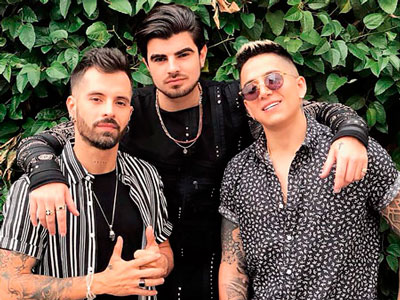
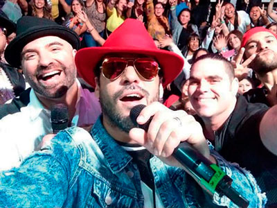
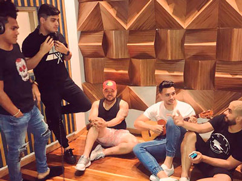
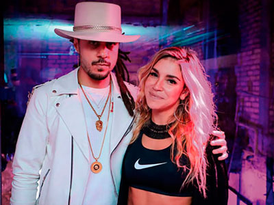
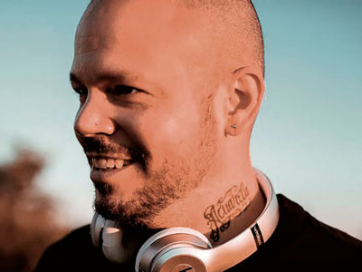
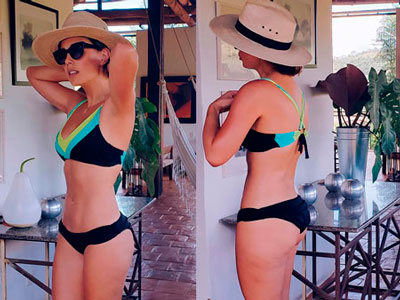
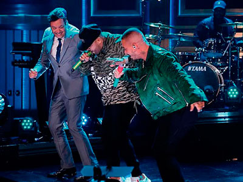

Chismes

¡TODA UNA LEONA!
Su debut como cantante lo hace con el tema –Leona– de la mano de su esposo y productor Mr. Black quien la considera su artista más importante Yuranis Leónbusca representar el género de la champeta demostrando que su talento es totalmente real, entre halagos y criticas la esposa del presidente de la champeta también afirmó que es una excelente compositora.

¡TE BESARÉ REMIX!
Foto: Tomado de @jonathanmoly
El cantante venezolano que ha conquistado los corazones de los colombianos Jonathan Moly reveló que estará lanzado el remix de su más reciente sencillo –Te besaré– en compañía de los cantantes colombianos Mike Bahía y Andy Rivera, una combinación que sus seguidores estarán encantados de escuchar.
¡DESPUÉS DE MUCHO TIEMPO!
Foto: Tomado de @ellokoquintero
Continuando la tradición del legendario intérprete de música tropical Gustavo “El Loko” Quintero, la Orquesta Los Graduados rinde un homenaje a su fundador y cantante ahora con la coordinación y dirección de Consuelo Ruiz, esposa y compañera de lucha del“Loko” presentando un mini mosaico titulado “Loko # 1” que reúne temas clásicos del repertorio del maestro.
¡LO NUEVO DE LA MÚSICA POPULAR!
Foto: Tomado de @alanramirezoficial
Los artistas Alan Ramírez y Jessi Uribe se unirán para entregarle a su público un nuevo tema musical que dará mucho de qué hablar, estos dos talentos del género popular desde ya aseguran que su nuevo tema será lo más sonado en el mes de septiembre y lo que queda del año.

¿MENUDO REGRESO?
Foto: Tomado de @mdoisback
Uno de los grupos de pop más importantes de los años 90 regresó para cantar todos los éxitos de su carrera musical, sus integrantes Abel Talamantez, Alexis Grullón, Ashley Ruíz, Didier Hernández y Pablo Portillo realizaron un espectáculo en donde interpretaron todos el repertorio que hizo parte de la última etapa de Menudo. Un show que encantó al público colombiano. Esperamos esta sea la primera de muchas presentaciones de esta agrupación en nuestro país.
“LITERALMENTE”
Es como se titula el nuevo álbum de Espinoza Paz, producido por el cantante mexicano y que contiene 13 temas del cual se desprende su más reciente sencillo –Te dejé de amar– esta nueva producción habla de situaciones como el desamor y dolor, con el sonido de mariachi que lo caracteriza, acompañado de pop acústico.
El artista visitó Bogotá para presentar su disco de manera anticipada. En un evento lleno de música, emoción y mucha diversión donde el canal Mi Gente Tv se hizo presente compartiendo y dialogando con el cantautor de los pueblos quien contó detalles de su sencillo y cantó algunos de sus éxitos.

“ALGUNOS SE VAN Y OTROS LLEGAN”
Foto: Tomado de @grupokvrassoficial
La agrupación vallenata Kvrass despide a uno de sus integrantes Jonathan Jaraba, conocido como ‘El Meke’, quien se había desempeñado como cantante dentro de la agrupación. ‘Rafa’ Daza cantante y Jaime Luis Campillo acordeonero serían los nuevos integrantes de Kvrass.

VALENTINA LIZCANO ¿SOLTERA OTRA VEZ?
Después de que la actriz se dejara ver muy enamorada del cantante León Kandela, ahora parece que la relación no dio más pues tanto ella como el eliminaron todas las fotos juntos en sus redes sociales, Valentina no ha comentado nada al respecto, no se sabe porque se alejaron pero al parecer terminaron.
¡UN MINUTO PARA PEDIR MATRIMONIO!
Foto: Tomado de @cvillalobos
El actor Sebastián Caicedo lleva diez años de noviazgo con la actriz Carmen Villalobospor lo que no dudo en proponerle matrimonio, el actor se encuentra participando en un reality en Estados Unidos y aprovechó una llamada de un minuto que ganó para hacer la propuesta de matrimonio “No me quiero volver a distanciar de ti ni por trabajo ni por nada”, le dijo Sebastián tras oír el “sí”

¡RESIDENTE REGRESA A COLOMBIA!
Foto: Tomado de @residente
Dos conciertos en el marco de su gira mundial tendrán lugar en nuestro país, el cantante confirmó por medio de sus redes sociales las fechas de sus presentaciones en Bogotá 23 y Cali 24 de noviembre. Sus seguidores podrán disfrutar todos sus grandes éxitos en ésta gira.
¿SE CASARON EN SECRETO?
Foto: Tomado de @diegopulecio
Diego Pulecio cantante de Don Tetto y novio de la presentadora Linda Palma dejó con la boca abierta a más de uno cuando le preguntaron qué cuándo le pediría matrimonio, a lo que respondió “De pronto ya nos casamos y nadie sabe”. El rockero dejó claro que la relación con Linda va muy bien y que solo está bromeando, habló del tema y aseguró que están planeando algo sencillo y tranquilo como ellos para la boda.
¡LA PRESENTADORA YA ES MAMÁ!
Foto: Tomado de @zahirabenavides16
Zahira Benavides presentadora de entretenimiento mostró a través de redes sociales cuan feliz se encuentra por la llegada de su primera hija “Dios te demuestra que sí eres capaz, temía siempre a todo, aunque confieso, las contracciones son un dolor inexplicable, pero el momento del parto es algo que solo uno como mamá puede vivir lo que ese instante te permite”, fueron las palabras de esta madre primeriza que no se cambia por nadie.

¡SIN FILTRO!
Foto: Tomado de @smilelopez
La hermosa Milena López compartió imágenes de sus vacaciones donde dejaba ver su escultural cuerpo “poco bronceado” según ella, pero lo que realmente causó controversia es que se evidencia un poco de celulitis en sus piernas, muchos seguidores hicieron comentarios a lo que Milena afirmó “ya no me preocupa tener celulitis soy una mujer real y feliz. Así que para aquellos que querían hacerle pasar un mal rato las críticas no la afectaron en lo más mínimo.

¡LES CANTÓ LA TABLA!
Foto: Tomado de @jbalvin
“Payasos del género” así fue como calificó J Balvin a reguetoneros que exaltan al narcotráfico en sus canciones para promocionarse, usar la violencia como tema para sus letras o presumir ser maleantes es algo que el artista no aprueba y rechaza tajantemente. Estas fueron sus palabras “Respeto pa’ los que son calle y guardan silencio porque su dolor y su realidad es mejor no contarlas, pero cero respeto a todos los payasos del género, que los siguen miles de personas y lo único que tienen para brindar es una mierda de vibras, cuando vinimos es a poner a la gente a bailar y a hacerlos felices”.
MILEY CYRUS Y LIAM HEMSWORTH PODRÍAN “NO CASARSE NUNCA”
Foto: Tomado de @liamhemsworth
La idea del matrimonio y todos aquellos rituales que lo caracterizan nunca han generado encanto en la pareja, ya que están convencidos de que la solidez de su relación no depende de tales tradiciones ni de la aprobación oficial de su entorno social.
¡LA BATALLA POST DIVORCIO SIGUE!
Foto: Tomado de @angelinajolieofficial y @bradpittoffcial
El divorcio entre Angelina y Brad lleva casi dos años de escándalos y acusaciones muy serias y no se detiene, la actriz acusa a Brad Pitt de no pagar la cuota alimentaria de sus hijos mientras que Pitt contraataca comprobando que le dio a Jolie unos 8 millones de dólares para comprar su actual residencia y que además pagó por encima de 1,3 millones de dólares para “beneficio de Jolie y los niños”. Hasta el momento los actores no han logrado llegar a un acuerdo final.
¡ES OFICIAL!
Foto: Tomado de @justinbieber
Justin Bieber le propuso matrimonio a su novia Hailey Baldwin en un restaurante de las Bahamas el pasado mes de julio, fuentes muy cercanas a la pareja han confirmado al medio estadounidense que el cantante y la modelo llegarán al altar el año que viene en una boda íntima que podría tener lugar en Canadá.
¡SE CASAN!
Foto: Tomado de @camilomusica
Después de 3 años de relación, Camilo Echeverry y Eva Luna Montaner anunciaron su compromiso por medio de las redes sociales a través de un vídeo y varias fotografías le contaron a todos sus seguidores el importante paso que darán. ¡Felicitaciones a esta hermosa pareja!
¡JAMES GUNN DESPEDIDO COMO DIRECTOR DE GUARDIANES DE LA GALAXIA 3!
Foto: Tomado de @davebautista y @jamesgunn
Todo el equipo de “Guardianes de la Galaxia” firmó una carta en la que piden que James Gunn siga siendo el director de la saga. Gunn fue despedido por unos tweets del año 2008 y 2009 en los que el director se burlaba abiertamente de temas delicados, los rumores apuntan a escándalos que por hoy estremecen a Hollywood.

¡A BAILAR REGGAETÓN!
Foto: Tomado de @nickyjampr
J Balvin y Nicky Jam pusieron a bailar reggaetón a Jimmy Fallon en su programa en la TV estadounidense “The Tonight Show” dos de sus hits más populares: “X” y “Mi Gente”. Esta claro que este género musical ha traspasado fronteras y uno de sus mayores exponentes es colombiano.